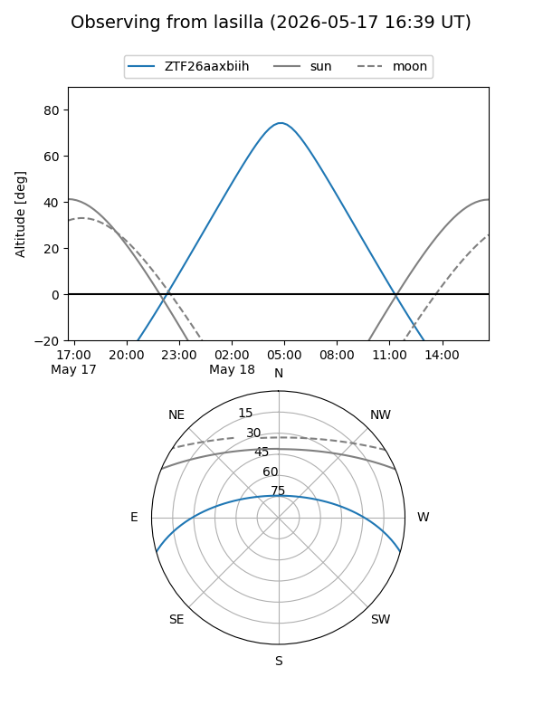
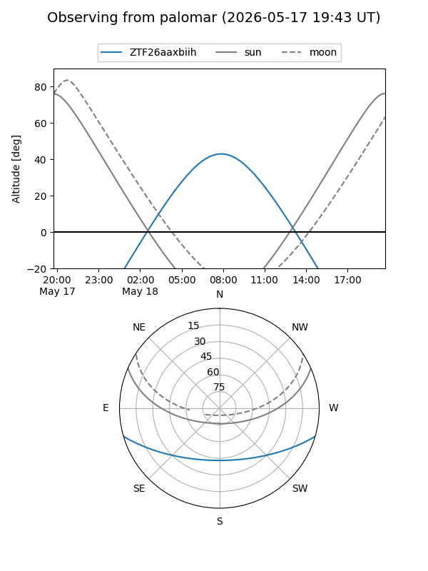

ZTF26aaxbiih
Target ZTF26aaxbiih at 2026-05-18 08:17
Aliases and brokers:
FINK: link
Lasair: link
ALeRCE: link
alt names
ZTF26aaxbiih (ztf,fink_ztf)
Coordinates:
equatorial (ra, dec) = 236.7674,-13.54021
equatorial (HMS+DMS) = 15:47:04.18,-13:32:24.74
galactic (l, b) = (354.8796,+31.10556)
Flags:
Photometry:
last ztfg=19.06
2 ztfg detections
Lightcurve
Visibility


Additional plots